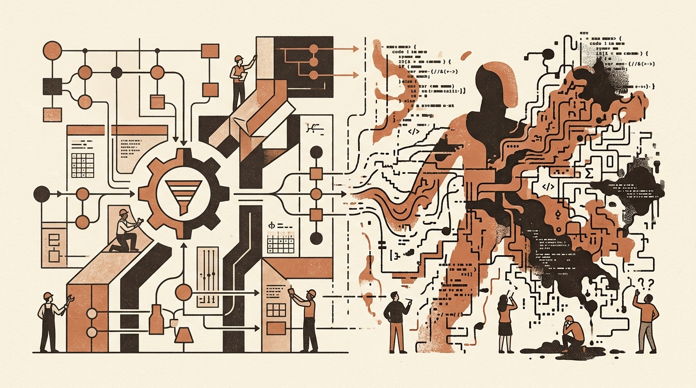

Pragmatic Pipeline Design and the Pitfalls of Automated Coding
Data science workflows and software development are increasingly shaped by automated tools, but recent discussions highlight the technical and cognitive trade-offs involved. Whether handling noisy enterprise datasets or leveraging autonomous coding agents, practitioners are finding that raw speed and probabilistic outputs often require strict operational guardrails.
In data engineering, standard similarity metrics frequently fall short when resolving duplicate records in messy datasets. Relying purely on fuzzy similarity scores forces developers to make arbitrary decisions about threshold boundaries. Implementing deterministic, multi-stage cleaning pipelines before applying similarity matching provides a more predictable and accurate method for standardizing entity names across large lists.
Simultaneously, the rapid integration of AI agents into software engineering raises questions about long-term developer engagement and oversight. While automated agents can significantly accelerate code output, delegating execution without active comprehension creates risks of subtle bugs and reduced critical thinking. Maintaining software quality requires evaluating not just execution speed, but the developer's ongoing role during automated code generation.
Covered Items
- One Vendor, Four Spellings: How Deterministic Stages Beat Similarity Scores — A practical guide on deduplicating a 10,000-row supplier list in Python using deterministic cleaning stages rather than relying strictly on similarity scores.
- AI Made Me 5x Faster. It Also Made Me 5x Worse at My Job. — An analysis of four months spent using AI coding agents, exploring how automated generation can boost output speed while inadvertently diminishing developer attention and software oversight.
Original feed: Towards Data Science